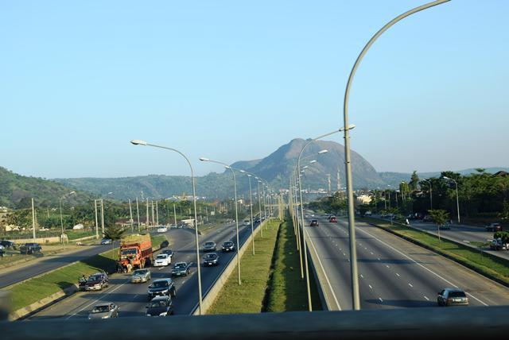

Abuja is the capital city of the Federal Republic of Nigeria, strategically situated at the geographic midpoint of the country within the Federal Capital Territory (FCT). As the seat of the Federal Government of Nigeria, it hosts key national institutions, landmarks, and buildings spread across its over 50 districts. It replaced Lagos (the most populous city in Nigeria) as the capital on 12 December 1991.
Major religious sites include the Nigerian National Mosque and the Nigerian National Christian Centre. The city is served by the Nnamdi Azikiwe International Airport. Abuja is known for being one of the few purpose-built capital cities in Africa, as well as being one of the wealthiest.
